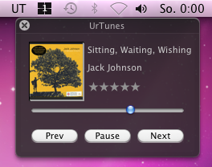

Control iTunes on OS X through the menubar.
It's free and licensed under the
GNU GPLv3.
It started as an experiment with Cocoa and
ScriptingBridge because the free version of
TotalTunesControl was cut of.
Screenshots (v0.1)
|
 |
 |
Download Binary
UrTunes 0.1 (11. September 2010) Release Notes
Download Source
You can download the latest source code of this project in either
zip or
tar format.
You can also clone the project with Git by running:
$ git clone git://github.com/mkroehnert/UrTunes